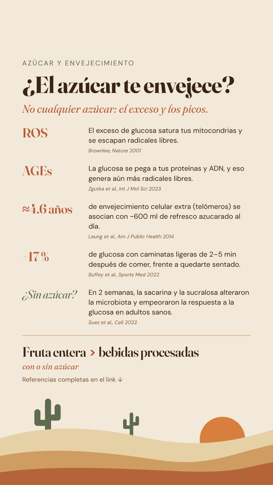

Ciencia para compartirScience to shareLa science à partager
Temas de ciencia contados en una story. Aquí está la parte que no cabe en la pantalla: cada dato, con el estudio que lo respalda y el tipo de evidencia que es.Science topics told in a single story. This is the part that doesn’t fit on the screen: every claim, with the study behind it and the kind of evidence it is.Des sujets scientifiques racontés en une story. Voici ce qui ne tient pas à l’écran : chaque donnée, avec l’étude qui la soutient et le type de preuve qu’elle apporte.

¿El azúcar te envejece?Is sugar aging you?Le sucre vous fait-il vieillir ?
Radicales libres, glicación, telómeros, picos de glucosa y edulcorantes: lo que dicen los estudios y lo que no demuestran. 7 referencias.Free radicals, glycation, telomeres, glucose spikes and sweeteners: what the studies show and what they don’t. 7 references.Radicaux libres, glycation, télomères, pics de glycémie et édulcorants : ce que montrent les études et ce qu’elles ne prouvent pas. 7 références.

¿Lo que comes envejece tu cerebro?Is your diet aging your brain?Votre alimentation fait-elle vieillir votre cerveau ?
Ultraprocesados, el mito de lo light, omega-3 y embarazo: lo que dicen los estudios y lo que no demuestran. 8 referencias.Ultra-processed food, the low-fat myth, omega-3 and pregnancy: what the studies show and what they don’t. 8 references.Ultra-transformés, le mythe du « allégé », oméga-3 et grossesse : ce que montrent les études et ce qu’elles ne prouvent pas. 8 références.